Commerce / End-to-end UX
LuxRoom
Designing confidence into every purchase.
Mapped product discovery, configuration and checkout into a responsive commerce journey with consistent UI and recoverable choices.
UX flows / UI systems / Responsive design
UI/UX & Product Designer
I’m Nghĩa, a UI/UX designer connecting complex flows, considered interfaces and working prototypes.
Explore selected workCommerce / End-to-end UX
Designing confidence into every purchase.
Mapped product discovery, configuration and checkout into a responsive commerce journey with consistent UI and recoverable choices.
UX flows / UI systems / Responsive design

Fintech / Research & iteration
A balance is not the whole picture.
Exploring safe-to-spend decisions, then revising the interface through two rounds of async self-report research.
Product reasoning / Research / Recovery UX
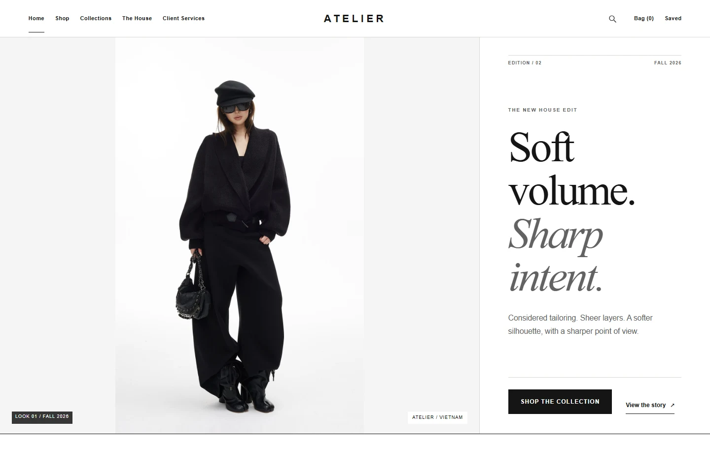
Commerce / UI & interaction craft
Editorial expression. Clear shopping decisions.
Balanced editorial storytelling with product discovery, evaluation and purchase through mobile-first hierarchy and interaction design.
Art direction / Interaction design / Mobile UX
Self-initiated projects. Research methods and limits are documented in each case. Explore my professional work ↗
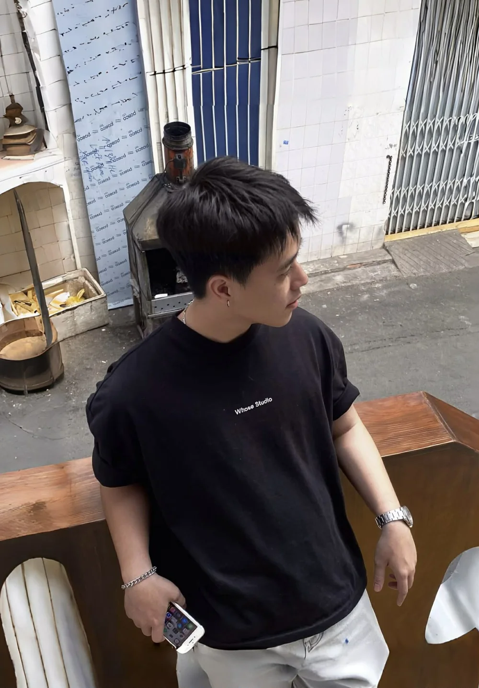
I bring structure to complex journeys, then carry the details through to the interface.
My experience spans agency websites, product flows and MVPs. I work across information architecture, responsive UI, reusable components and developer handoff.
View resumeUI/UX Designer
May - Sep 2026
Requirements, responsive UI and reusable components across 8+ web projects.
UI/UX Designer
Dec 2025 - Apr 2026
Journeys, wireframes and interaction states across 15+ product flows.
Intern UI/UX Designer
Sep - Dec 2025
Responsive MVP interfaces and implementation-ready handoff.
Commerce, financial products and digital services, with linked Figma files.
12 projects in 4 categories
Product discovery, evaluation and purchase.
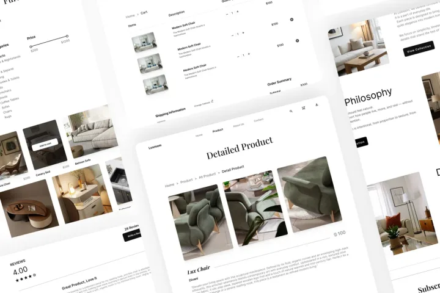
Independent concept
Mapped product discovery, configuration and checkout into a responsive commerce journey with consistent UI and recoverable choices.
UX flows / UI systems / Responsive design
User testing and conversion impact unmeasured.
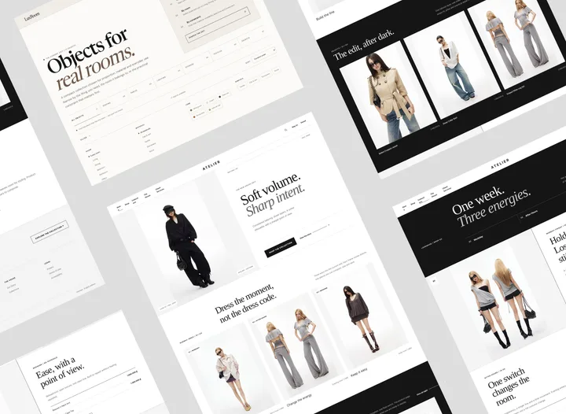
Independent concept
Balanced editorial storytelling with product discovery, evaluation and purchase through mobile-first hierarchy and interaction design.
Art direction / Interaction design / Mobile UX
Usability benchmark not yet measured.
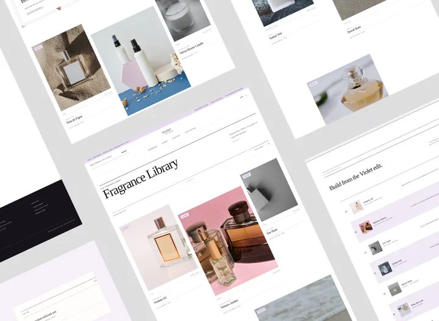
Independent concept
Structured fragrance discovery around product comparison and scent confidence, connecting rich product content with marketplace usability.
Discovery UX / Product comparison / Visual design
User and business outcomes unmeasured.
Trust, money decisions and complex operational states.
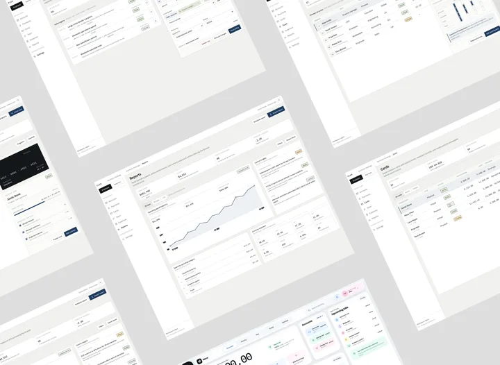
Independent concept
Translated multi-currency operations into clear information architecture, approval workflows and exception states for financial decisions.
Complex IA / Workflow design / State design
Domain validation and business impact unmeasured.
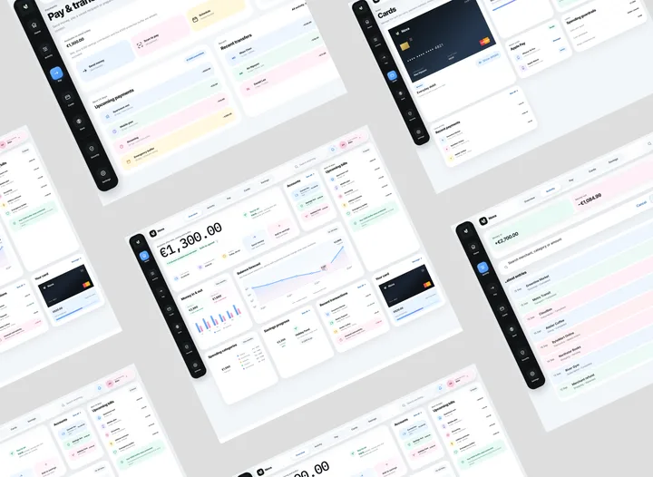
Independent concept
Designed safe-to-spend mental models, payment flows and recovery states, using direct self-report evidence to guide iteration.
Product reasoning / Evidence to iteration / Recovery UX
10 async self-reports across two rounds. Four findings remain open; further testing is required.
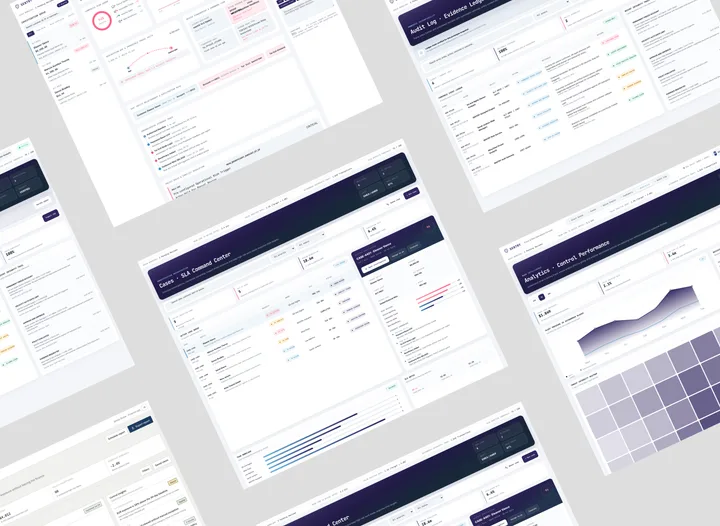
Independent concept
Organized alert triage, forensic evidence and consequential actions into one investigation flow with explicit permissions and recovery.
Enterprise UX / Dense information / Permissions
Practitioner validation remains open.
Roles, workflows and information-dense systems.
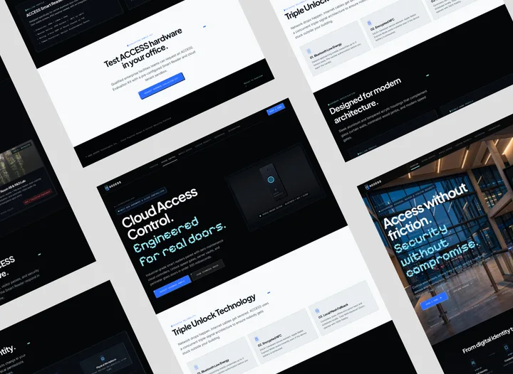
Independent concept
Mapped everyday entry, visitor journeys and access permissions into a coherent system with clear expiry and emergency controls.
Journey mapping / Permissions / Interaction states
Domain validation remains open.
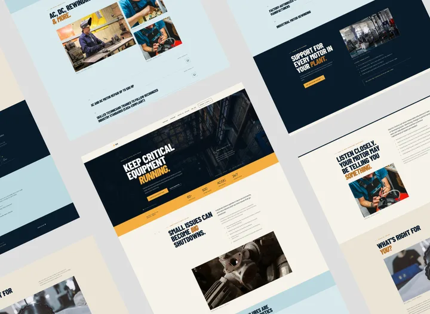
Design test / Prototype
Translated dense industrial content and a constrained brief into reusable page structures, responsive hierarchy and clear next actions.
Brief analysis / Content architecture / Component design
Delivery scope is separate from business impact.
Clear information for real-world decisions.
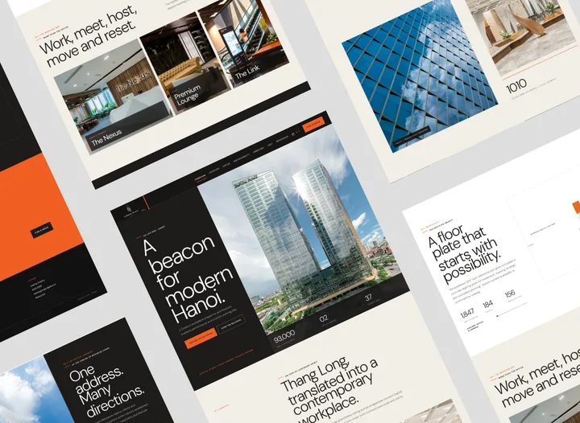
Independent redesign
Restructured property discovery around tenant decisions, connecting location, space requirements and floor context to enquiry.
User journeys / Content strategy / Conversion flows
Enquiry and business impact unmeasured.
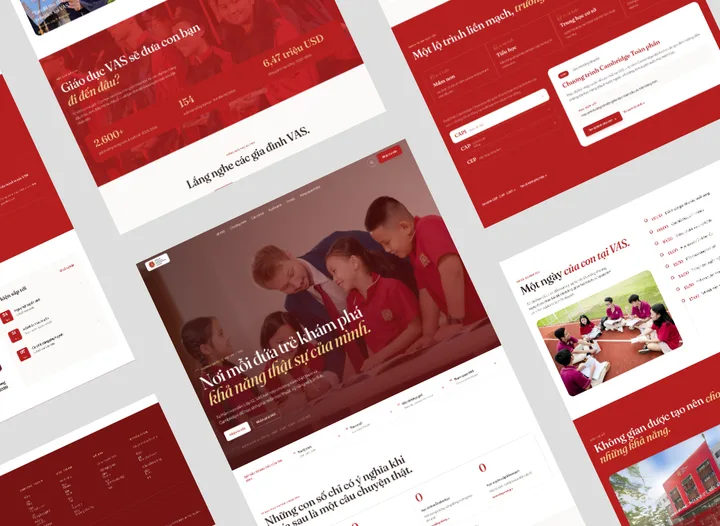
Independent redesign
Reorganized programs, campuses and admissions around family decisions, making comparison and the next admissions step easier to locate.
Multi-audience IA / Journey design / Responsive UI
Parent usability benchmark not yet measured.
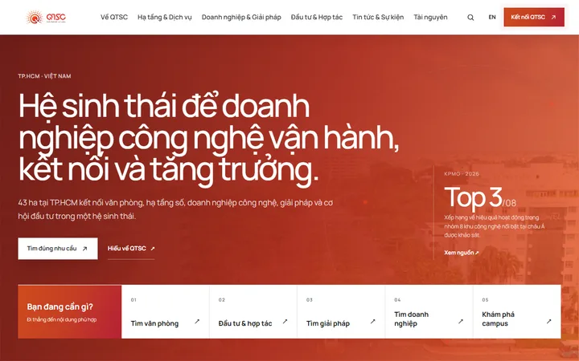
Independent redesign
Organized a technology ecosystem into intent-led discovery, directory and service journeys across a multi-page responsive website.
Information architecture / Navigation / Service discovery
Static interactive prototype.
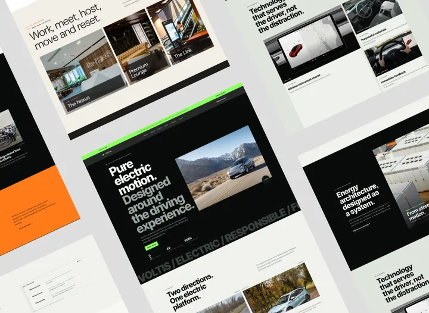
Independent concept
Connected vehicle information, technology and company credibility through bilingual content hierarchy and coherent product storytelling.
Product storytelling / Bilingual UX / Responsive design
User and business outcomes unmeasured.
Try another name or skill, or clear the filters.
Concepts, prototypes and tools are labelled by scope. Professional delivery is documented in Professional Work.
From understanding the problem to testing the details. AI supports exploration and implementation; I own the design decisions.
Frame the problem. Map the flow. Build the system. Test, learn and refine.
UIUX Factory makes that practice repeatable, with explicit assumptions and checks on the rendered product.
Writing
What faster execution asks of design judgment.
Have a product challenge in mind?